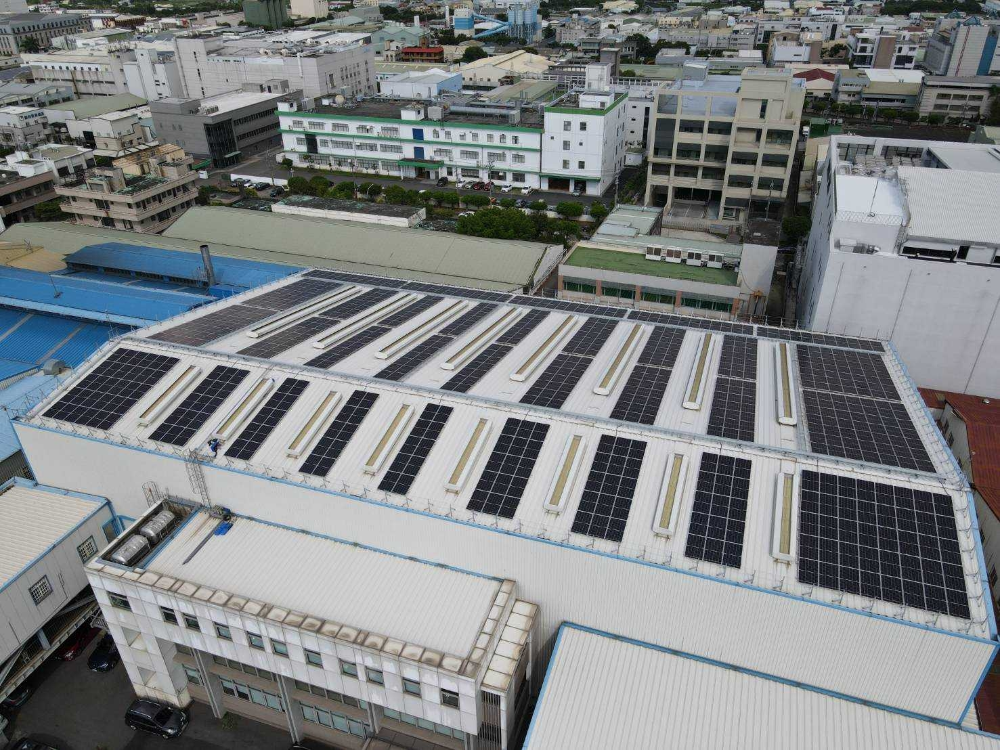

OUR SERVICES
新懋鋁業的核心服務與優勢項目
中鋁與多國進口鋁板
現貨供應中鋁鋁板及日鋁、韓鋁、瑞鋁等優質進口鋁板，材質包含 5052、5083、6061、7075 等，平整度高、品質穩定。
各式工業鋁擠型材/代客開模
提供多樣化鋁擠型產品，包含鋁圓棒、扁條、方條、角鋁與結構型材，滿足自動化設備與工業機構設計需求。
鋁板與擠型裁切
配置專業鋸切設備，提供精準尺寸公差與平整斷面的鋁材裁切服務，減少客戶二次加工時間與損耗。
高品質銑面加工服務
針對鋁板與型材提供客製化銑面加工，精密去公差與提升平面度，確保絕佳的表面接觸品質與組裝精度。
GREEN ENERGY & SUSTAINABILITY
響應綠能永續 ‧ 邁向低碳製造
新懋鋁業積極實踐 ESG 企業社會責任，於台中廠與高雄廠全面鋪設太陽能光電屋頂系統，以實際行動投入綠電自發自用與節能減碳，為客戶提供更具競爭力與符合永續價值的材料供應服務。
綠能發電廠區

台中總公司 ‧ 綠能發電屋頂
台中總廠建置現代化太陽能光電系統，有效運用空間轉化潔淨能源，大幅降低運營碳足跡，邁向淨零碳排永續目標。
低碳永續製造

高雄廠 ‧ 綠能示範基地
高雄廠屋頂全面鋪設高效能太陽能板，結合廠內裁切與加工設備，落實綠色製造理念與符合國際綠色供應鏈標準。